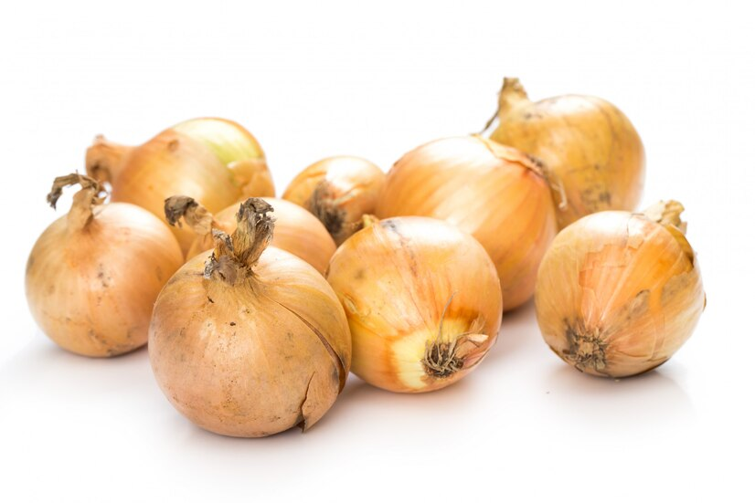

Caramalized Onions

INGREDIENTS
- 1/4Kg Sweet Onion
- Olive Oil
- 2 Garlic cloves
- Spices to Taste [ ex.: Curry, Garlic Powder, Chicken Spices ]
- Optional: 100-150g White Button Mushroom
STEPS
- Cut up the onions into smaller slices. Do the same with the mushrooms. Cut the garlic cloves into
thirds.
- Heat up some olive oil on medium heat on the pan. Once heated, put heat on low.
- Put the garlic and the onion into the pan, and stir often. Season to preference.
- Optional: Once the onions start looking golden and soft, add the mushrooms slices. Cook until the
mushrooms are almost as soft as the onions.
- Serve and enjoy!